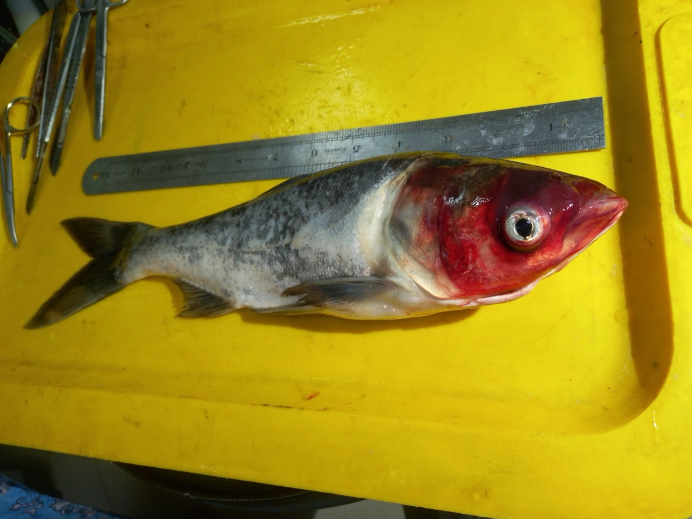
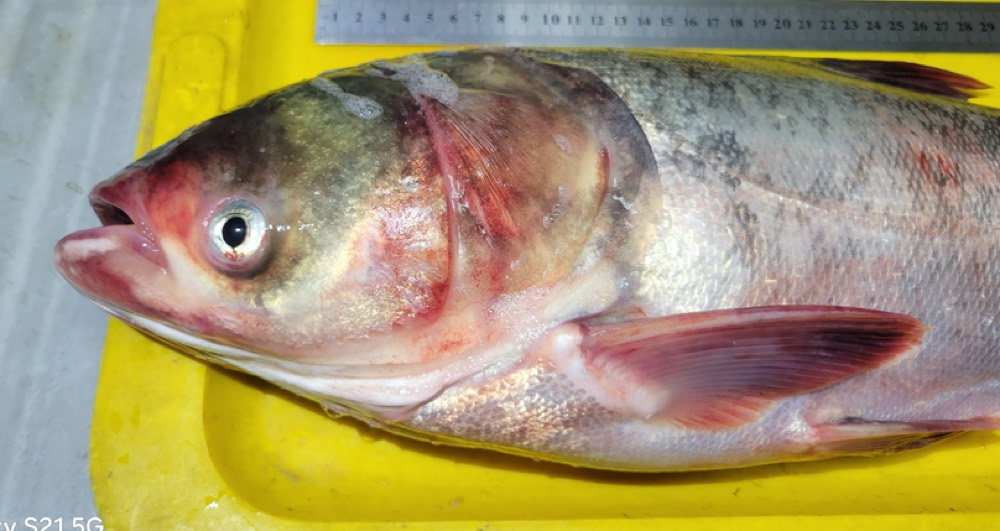
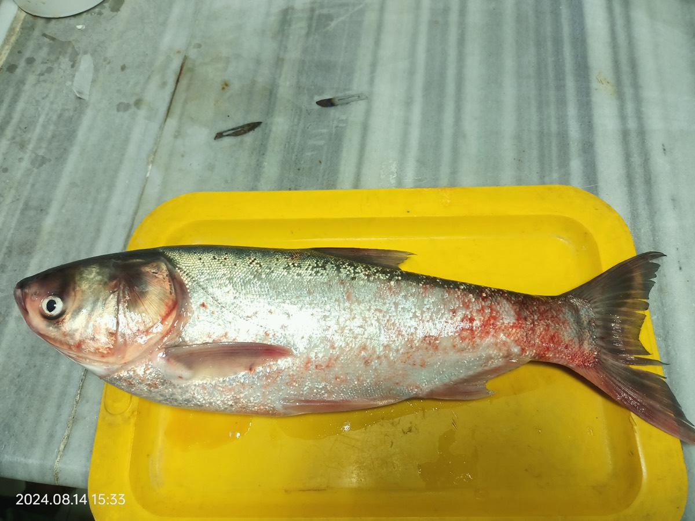
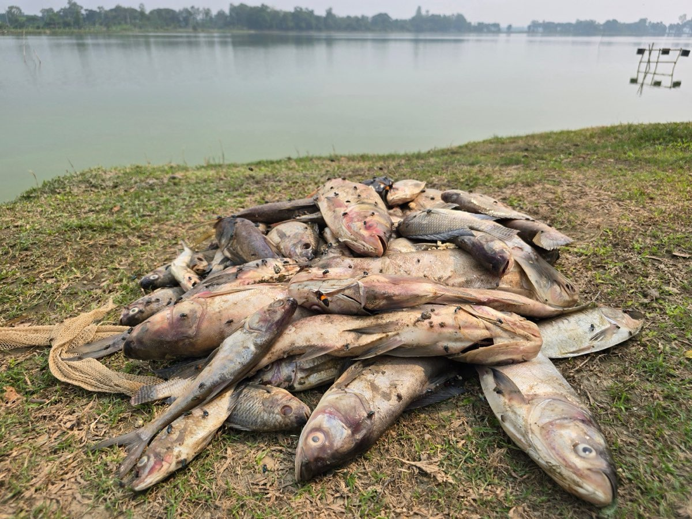

Bangladesh Fisheries Research Institute · Mymensingh
Investigation & Molecular Characterization of Diseases Affecting Cultured Carps in Bangladesh
A playable guide to this research proposal. Go through the 10 slides one quest at a time and pick up the background knowledge (fish biology, microbiology, PCR, antibiotic resistance) you need to really understand them.
- +XP for every section, game and right answer
- 19 badges to unlock
- Saved on this device

Your quest map: the deck, slide by slide
Meet the carps
Before learning about the diseases, meet the patients. Bangladeshi ponds are usually stocked with a polyculture of native Indian major carps (IMCs) and exotic Chinese carps.
Approximate figures from the Department of Fisheries (DoF) yearbooks. Check the latest edition for current numbers.
Pond Architect
Polyculture works because each species feeds in a different layer. Pick a fish, then tap the layer where it feeds.
Why does this research matter?
The slide gives four justifications. Open each one to see the reasoning behind it.
Outbreak loss calculator
How much does one outbreak cost a single farmer? Move the sliders. (Illustrative, simplified economics.)
The One Health loop
Antibiotics used in a pond don't stay in the pond. Tap each arrow.
Objectives → Methods → Outputs
Each objective is a question, each method answers it, and each output is the result. Tap an objective to see how it connects to the rest.
Objectives
Methods (Activity 2)
Expected outputs
Disease atlas
Objective i asks about the clinical characteristics of disease. Learn to read a sick fish: tap each glowing region.
Tap a glowing circle on the fish to start the inspection.



Fish Doctor: diagnose the case
Read the farm report and pick the most likely disease.
Activity 1: What do farmers know?
Before looking down a microscope, the team asks the people who see the fish every day. Step through the six-stage methodology.
The PRA toolbox
Questionnaire clinic
A badly worded question gives bad data. Is each question good, or does it need fixing?
Activity 2: From sick fish to named pathogen
The slide's flowchart, made interactive. Open every step to earn the Pipeline Pro badge. Colours show the lane: Field Culture Molecular
Select a step in the flowchart.
Selective media explorer
Which agar would you streak for which suspect?
Mystery isolate
You have a pure colony. Run as few tests as possible, then name the organism. Fewer tests mean more XP. (Simplified teaching profiles.)
Read the antibiotic plate
Measure each zone against the breakpoints and classify it: Susceptible, Intermediate or Resistant. Then work out the MAR index. (Illustrative breakpoints. Real work uses current CLSI tables.)
Koch's postulates: the challenge test
Histopathology: the slide factory
The molecular lab
qPCR, PCR, 16S sequencing and phylogenetics answer Objectives ii, iii and iv. Play with each technique.
qPCR: watch DNA double
Every cycle doubles the target. Move the starting copies slider and watch the curve shift. Then read the Ct.
Virulence gel
Conventional PCR for a virulence gene, run on a gel. Pick a gene, then tap the isolates that carry it (a band at the right size). (Amplicon sizes are illustrative and depend on the primer set.)
16S rRNA: what does % identity mean?
Virulence arsenal
The genes Objective iv screens for. Tap one to learn what it does.
Read the tree
A hypothetical 16S tree of local isolates and reference strains. Numbers are bootstrap support (%). Tap a tip to highlight its lineage.
Work schedule, Jul 2026 – Jun 2027
Twelve months, five overlapping activities. Drag the month slider to see what the team is doing each month.
Knowledge graph
Every concept in this guide and how they link. Drag nodes, scroll to zoom, click a node to see its connections. Explore 15 nodes for a badge.
0 / 15 nodes explored
Flashcards
Tap the card (or press space) to flip it. Mark Got it or Again. Cards you miss come back sooner (Leitner boxes).
Quiz arena
Pick a topic round (score 80% for the Quiz Ace badge), or face the Boss Battle: 15 random questions, 3 lives.